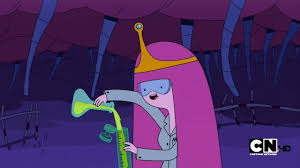

Princesa Jujuba (muitas vezes referida como PJ ou Jujuba), é um dos personagens principais de Hora de Aventura, na trama ela é a governante do Reino Doce. Princesa Jujuba ama seus súditos e é amada pela maioria deles por defendê-los incansavelmente quando há algum problema. Sua dedicação ao Reino Doce é mostrada quando ela visitou um Orfanato Doce e passa algum tempo para animar as crianças. Como um passatempo, ela gosta de cuidar de seus animais e de jardinagem. Ela usa um vestido rosa e longo, sendo os detalhes violetas, além de uma coroa sobre sua cabeça. A sua cor de pele é uma tonalidade de rosa muito claro, quase branco, e seus cabelos são rosas.